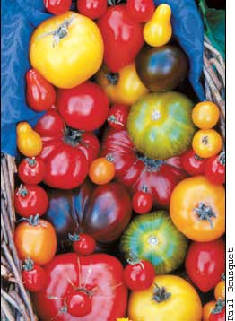
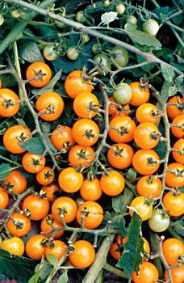
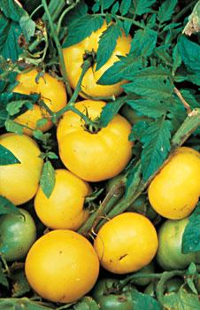
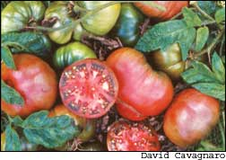
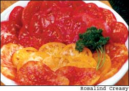

Grow Great-Tasting Tomatoes
Find out how expert growers cultivate terrific tomato flavor.
By Barbara Pleasant
April/May 2005
Nothing captures the flavor of summer quite like a homegrown, perfectly ripe tomato, and for some gardeners, the quest for ultimate tomato taste becomes a way of life. Take Nebraska greenhouse owner Linda Morris for example. Five years ago she reshuffled her priorities, giving up full-time nursing to start Cedar Knoll Farm Greenhouse, near Laurel, where she grows tomatoes, peppers and herbs. Morris’ main agenda is to help people stay healthy by eating more nutritious foods, and superior flavor is an integral part of that mission. “You cannot beat the taste of the tomato that you pick in its prime when you walk out your back door,” she says.
But how do you get from wanting a great-tasting tomato to picking one? From Nebraska to North Carolina to Texas, folks who know tomatoes say great flavor involves the interplay of personal preferences and plant variety with soil fertility, water and sunshine.
The tomato varieties you pick should be a good fit for your climate because big, healthy plants produce better-tasting tomatoes. Heirloom varieties are famous for their flavors, and equally notorious for growing well in some areas, but not in others. “I had a customer from the South who could not believe he had to order ‘Arkansas Traveler’ plants from a greenhouse in Nebraska,” Morris says. “His local nursery carried ‘Brandywine,’ a well-known name in the heirloom world that does not grow well in hot climates. In comparison, ‘Arkansas Traveler’ holds up in intense heat.”
At Angel Valley Organic Farm near Austin, Texas, full-time organic farmers Jo and John Dwyer have found they can grow a few heirlooms as early tomatoes, but even then they are lackluster producers. “Some folks find it kind of odd that most of our tomatoes are hybrids, but we need disease resistance and good productivity because we do this for a living. We won’t grow a genetically modified variety, but we’ve found several hybrids that stand up to heat and disease and deliver big tomato flavor,” Jo Dwyer says. Two of her favorites are ‘Dona,’ a juicy French hybrid, and ‘Red Sun,’ a huge slicing tomato that she says handles the heat beautifully.
In any tomato, lots of foliage leads to lots of flavor, and lush foliage is due to both nature (variety) and nurture (how the plants are grown). “Flavor in tomatoes is dependent on the food that’s manufactured in the foliage,” says Randy Gardner, a tomato breeder at the Mountain Horticultural Crops Agricultural Research Station near Asheville, N.C. “That’s one reason why heirlooms have such good flavor. They are typically large, indeterminate plants, with a higher ratio of foliage to fruit.”
In tomato lingo, indeterminate means that plants continue to produce new leaves and flowers after they enter their reproductive stage.eterminates stop growing when they start flowering and send all their energy toward the production of tomatoes. In between are the so-called vigorous determinates, such as ‘Celebrity,’ that produce a big crop, then keep growing and setting more fruits later in the season.
Indeterminate and vigorous determinate varieties are usually preferred where summers are long and warm, while determinates often perform best in cool climates, or in situations where you want a concentrated harvest for canning, freezing or drying.
Start With The Soil
Good garden soil is an important ingredient in growing great tomatoes. Chemical fertilizers will promote growth of the plant, but they do nothing for the flavor of the fruit, the Dwyers say. You have to start with rich, healthy soil.
Chip Hope is co-owner of Appalachian Seeds, in Flat Rock, N.C., which specializes in heirloom tomatoes. He suggests creating such soil by digging in plenty of manure-based or spent mushroom compost.ig a roomy hole and mix the soil with the compost. Tomatoes do best in slightly acidic soil, so you may also need to add lime if a soil test indicates your soil is overly acidic. Next, move in with mulch, which helps to retain moisture, suppress weeds and prevent problems with diseases. “We’ve been using hairy vetch as a living mulch planted in the fall,” Hope says. “In spring, we mow it down and plant through it, and it’s working very well.”
Recent research at the U.S.epartment of Agriculture’s Sustainable Agricultural Systems Laboratory in Beltsville, Md., suggests that hairy vetch mulch supports tomatoes by enhancing the plants’ ability to utilize calcium and nitrogen, and by increasing their resistance to disease. Other mulches, such as wheat straw, benefit the plants’ roots and keep rain from splashing soil-borne disease spores onto the foliage
Keeping plants upright, by securing them to stakes or a trellis, or by growing them in sturdy cages, also keeps the foliage high above the ground. This reduces the risk of foliage loss due to disease and increases each leaf’s exposure to the sun. Heat and sunshine are crucial to the development of a tasty tomato, the Dwyers say, noting the distinct difference between a tomato that ripens in cool weather and one that has had the benefit of nice, hot summer days.
Keeping Plants Healthy
Hope drenches his tomatoes with seaweed (kelp) sprays throughout the season. “I think of it as a nutritional boullion from the sea, and it makes the plants tougher and hardier, and improves flavor,” he says.
The Dwyers agree, and say they find that frequent seaweed sprays prolong the life and health of their plants. “It’s basically a foliar feed that enriches the soil when it drips down through the mulch,” Jo Dwyer says. Seaweed sprays help boost the sugar content of tomatoes (and other fruits, too), and many to mato lovers cite a balance between sweetness and acidity as the key to great tomato flavor.
A steady supply of water is required to support strong growth of foliage and fruits, and to prevent cracking, which is often due to sudden changes in soil moisture levels. You can’t do anything about excessive rain, but when the water supply is under your control, take care not to overwater your tomatoes. Too much water dilutes tomato flavor
Beyond food and water, tomato plants need to keep their leaves if they are to produce intensely flavorful fruits. “When you have a loss of foliage, you have a loss of flavor,” Gardner says
Insects are usually minor problems. Tomato hornworms are big enough to pick off by hand, and lots of other pests bypass tomatoes because they find them so unpalatable. At Ohio State University’s Organic Food and Farming Education and Research Center in Wooster, Sally Miller has evaluated more than a dozen natural pest-control products in tomato plots over the last three years. She has found that two products - Garlic Barrier, a garlic-based spray, and Trilogy, a neem oil extract - are effective for controlling insects that wander into the plots
Diseases are harder to control, because most are caused by fungi that live in the soil or that enter the garden as windblown spores. When you read seed catalogs, it’s hard not to be impressed by the long list of diseases for which genetic resistance is readily available. These symbols include “V” for verticillium wilt, a soil-borne fungus that causes plants to wilt and die; “F” for fusarium wilt, a soil-borne fungus that causes plants to turn yellow just before they wilt and die; “N” for parasitic nematodes that infest roots; “T” for tobacco mosaic virus, usually evidenced by oddly stringy leaves and malformed fruit; and a sprinkling of other letters for less-widespread diseases.
What’s been missing - until recently - are varieties resistant to early blight, a common leafspot disease that begins as dark spots on low leaves that become so numerous the leaves wither and fall. The good news is that a few varieties offer some resistance. A “saladette” variety with characteristically small, oblong fruits called ‘Plum Dandy’ is resistant, and Johnny’s Selected Seeds carries a round-fruited hybrid (cur-
rently known as JTO-99197) that has shown good resistance in the field. To manage early blight on nonresistant varieties, Miller has found that new bacterial fungicides, including Serenade (Bacillus subtilis) and Sonata (Bacillus pumilis), can reduce or delay foliar diseases when applied regularly to both sides of tomato leaves.
Unfortunately, no tomato can outgrow late blight, caused by ever- changing strains of the Phytopthora infestans fungus, the culprit behind the tragic Irish potato famine of the 19th century. At Oregon State University, breeders released the late blight-resistant ‘Legend’ determinate variety three years ago. ‘Juliet,’ an indeterminate, vigorous hybrid saladette, shows some resistance as well. But where disease pressure is high due to continuous cool, rainy weather, these varieties still succumb to the disease, too. This is not the tomato’s fault, because Phytopthora infestans has an amazing talent for changing the enzymes it uses to invade leaf tissues. “Anything you can do to reduce the introduction and spread of the pathogen will help,” says Jim Myers of Oregon State, who helped develop ‘Legend.’
“Get rid of old, infected vines, fruit and tubers from tomatoes and potatoes, and do what you can to keep the foliage dry,” Myers says. He also suggests removing leaves that show early signs of late blight (wilted, water-soaked leaves), but only if you can do so when the foliage is dry. Myers, Gardner and other breeders are working hard to develop blight-resistant varieties, which should become available within the next five years
How do these varieties taste? In a taste test, they won’t blow away the sweet ‘Sun Gold’ or the subtly salty ‘Black Krim.’ But when the choice is among having no tomatoes, watery grocery store hardballs and sun-ripened beauties from your own back yard, healthy, blight-resistant varieties are the best-tasting tomatoes in the world.
Favorite Varieties
“Flavor varies so much that you have to choose a variety that tastes the way you like a tomato to taste,” says Hope of Appalachian Seeds. “There are sweet ones, tart ones, smoky ones, or they can be spicy, fruity or tangy. Then there is what people call ‘old-time tomato flavor,’ which is usually a balance of sweetness and more complex flavor factors.”
Some tomatoes have especially intense flavors. Among slicing tomatoes, so-called “black” or “purple” indeterminate heirloom tomatoes such as ‘Black Krim,’ ‘Pruden’s Purple’ and ‘Cherokee Purple’ - and a half dozen others - have to be put at the end of taste tests because they have such outstanding, complex flavors that they would overpower any tomato that followed them
Many people, including Morris of Cedar Knoll Farm, like the light, lemony zing of ‘Lemon Boy,’ and the Dwyers say that ‘Red Sun’ is a remarkably delicious red slicer, deserving of the finest salads. Another tomato they recommend is ‘First Lady,’ as a full-flavored change of pace for fans of ‘Early Girl.’
Pretty, productive and delightful to eat, small-fruited cluster tomatoes are well represented on many “favorites” lists. Morris says she likes ‘Stupice,’ and if Hope had to pick just one tomato, he says it would be ‘Thai Pink,’ a sweet, iridescent pink saladette that doesn’t crack and that develops big tomato flavor. A yellow variety with a faint blush of pink, ‘Garden Peach’ gets high ratings for intense fruitiness.
Cherry tomatoes are among the sweetest types of tomatoes you can grow. Two varieties that come highly recommended are the yellow ‘Sun Gold’ and orange ‘SunSugar.’ The supernutritious ‘Peacevine Cherry’ is another favorite of many people; this variety is especially rich in vitamin C.
Can’t decide? Always diversify by growing more than one or two varieties, and keep trying new ones every chance you get. Eventually you’ll find it - your perfect tomato.
Tomato Platter with Vinaigrette
Many heirloom tomatoes, especially beefsteak varieties, look and taste great when served on a platter and drizzled with this simple but tangy dressing 6 to 8 large beefsteak tomatoes, approximately 4 pounds total
Garnish: fresh basil, mint leaves or parsley
For the vinaigrette:
1 teaspoon Dijon mustard
2 tablespoons fresh lemon juice
1 tablespoon dry white wine
1 tablespoon fresh minced basil or mint
½ cup extra-virgin olive oil
Salt and freshly ground black pepper To make the vinaigrette:
In a bowl, whisk together the mustard, lemon juice, wine and basil or mint. Slowly whisk in the oil, beating continually until the dressing is thoroughly blended. Add salt and pepper to taste, then refrigerate
Just before serving, slice the tomatoes. On a large platter, lay them out in a decorative pattern.rizzle the vinaigrette over tomatoes, add garnish and serve. Serves 6 to 8
- From The Edible Heirloom Garden, by Rosalind Creasy
Heirloom Tomato Suppliers
Check out the companies below for a good selection of varieties. Many also offer natural pest-control products
Appalachian Seeds
P.O. Box 248
Flat Rock, NC 28731
www.appalachianseeds.com
Bountiful Gardens
Willits, Calif
(707) 459-6410
www.bountifulgardens.org
Cedar Knoll Farm Greenhouse
Laurel, Neb.
(402) 584-2699
www.cedarknollfarm.com
Johnny’s Selected Seeds
Winslow, Maine
(800) 854-2580
www.johnnyseeds.com
Totally Tomatoes
Randolph, Wis
(800) 345-5977
www.totallytomato.com
Tomato Growers Supply Co
Fort Myers, Fla.
(888) 478-7333
www.tomatogrowers.com
|
 Paul Bousquet 'SunSugar' is unusually sweet even for a cherry tomato. |
 David Cavagnaro 'Lemon Boy' has medium-sized fruit and a sweet and mild, slightly tangy taste. |
 David Cavagnaro 'Black Krim' is a medium-sized heirloom tomato, developed in the Black Sea region of Russia. It is often described as having a rich, slightly salty flavor. |
|
 David Cavagnaro 'Brandywine' and 'Big Rainbow' beefsteak tomatoes with vinaigrette. |
 Rosalind Creasy Cherry and pear tomatoes have some of the sweetest flavors of any types of tomatoes. During the summer, farmer's markets often have a good selection of varieties. |
 Linnea Johnson An oxheart, a meaty tomato type that has few seeds, makes a big impression at Seed Savers Exchange in Decorah, Iowa. |
|
David Cavagnaro |
|
|